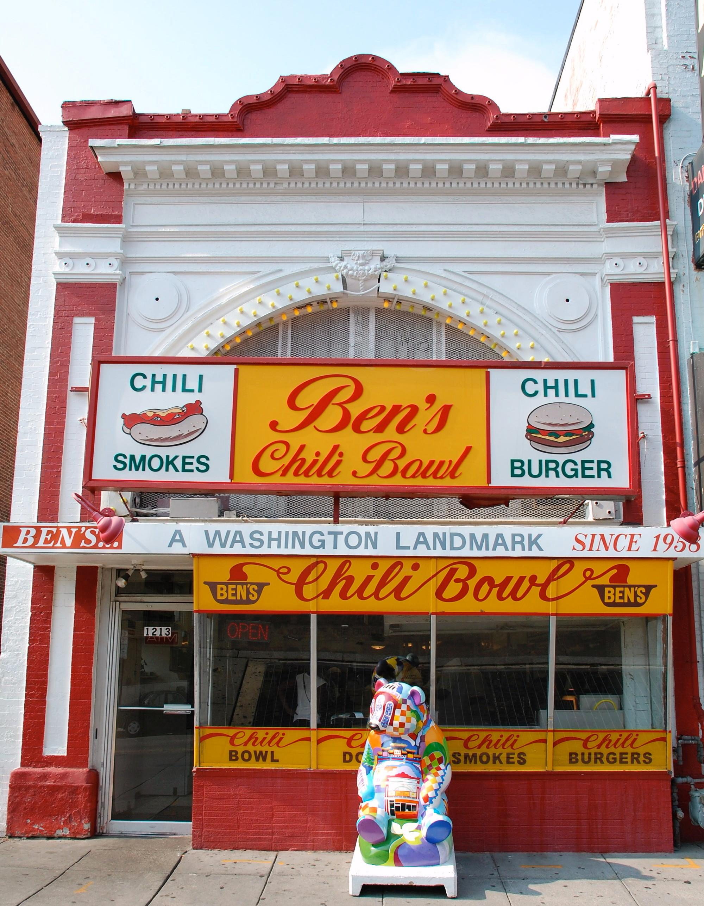
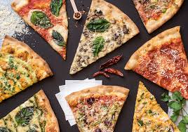

Food

Ben's Chilli Bowl
1001 H Street NE Washington DC, 20002Celebrities, locals and tourists alike have flocked to Ben's Chili Bowl for over 58 years for its flavorful and authentic food, family friendly atmosphere, and low prices. Make sure you try Ben's Famous Chili Half Smoke ($6.55), voted Washington's signature dish. Other favorites include Ben's Chili Cheese Fries ($6.55) and Double Burgers ($8.75). There are also many vegetarian options such as Veggie Burger Sub ($10.80) and Vegetarian Chilli ($5).
Hours: Open Monday, Tuesday, and Sunday from 11 AM to 9 PM, Friday and Saturday 11 AM to 3 AM, and from Thursday 11 AM to 10 PM.
Cava
707 H Street NW Washington, DC 20001Cava offers a Mediterranean mix at an affordable price, too. You begin with a base, add a few dips and spreads, stack it with a protein like braised beef or lamb, then top it off with crumbled feta, pita crisps, cucumber salad. The prices are between $9 to $12 and the sides and beverages are around $2.50
Hours: Daily, 10:45 AM - 10 PM

Wiseguy's Pizza
300 Massachusetts Ave NW, Retail #1, Washington, DC 20001Wiseguy Pizza features ingredients imported from Italy, homemade meatballs and sauces, and a special water filtration system. The pizza is even baked in an old-school, stone deck oven. Wiseguy Pizza also offers vegetarian options. You can choose to build your own pizza for between $10 - $15, or order one for $16 - $22. You can also buy calzones and sandwiches for around $8.
Hours: Open Monday, Tuesday, and Wednesday from 10:30 AM to 2 AM, Thursday from 10:30 AM to 4 AM, Sundays from 11 AM to 2 AM, and Fridays and Saturdays from 11:00 AM to 5:00 AM.

Ted's Bulletin
1818 14th Street NW Washington, DC 20009Teds Bulletin is a laid-back restaurant and bakery serving classic American cuisine in a comfortable and welcoming environment. They serve breakfast, lunch, and dinner and have many vegetarian, vegan, and gluten-free options. They are known for their homemade food including their famous pop tarts. For lunch and dinner, their specialties include Chicken Parmesan ($17.49), Grilled Salmon ($19.89), Baby Back Ribs ($18.89), Mushroom Stroganoff (14.89), Gumbo ($18.89), and Shrimp and Grits ($19.89).
Hours: Open Monday to Thursday from 7:00 AM to 10:30 PM, Fridays and Saturdays from 7:00 AM to 11:30 PM, and Sundays from 7:00 AM to 10:30 PM.
Lafayette Restaurant
800 16th Street, NW Washington, DC 20006The Lafayette directly overlooks the Lafayette Square and the White House. It is a famed restaurant in Washington, D.C., featuring a light-filled dining room and contemporary American cuisine. The Lafayette has an attentive staff, stately setting, and meal service for breakfast, lunch, dinner, and brunch. Visiting the Lafayette provides a unique dining experience in Washington, D.C. The Lafayette offers vegan and gluten-free options. Meal prices range from $4 to $31.
Hours: Weekday breakfast is from 6:30 AM to 11 AM, Weekend breakfast is from 7:00 AM to 11:00 AM, lunch is from 11:30am to 2:00pm, dinner is from 5:30pm to 10:00pm, and Sunday brunch is from 11:30am to 2:00pm